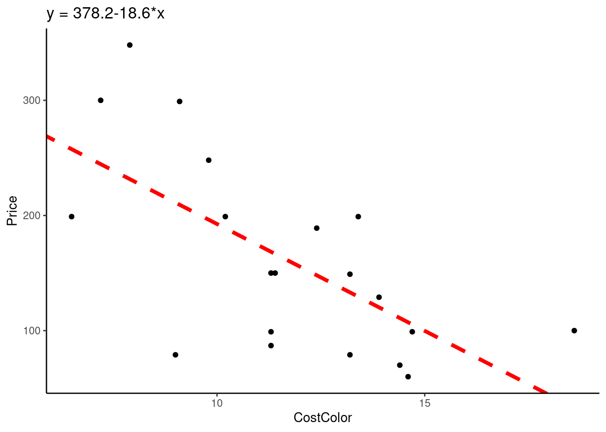
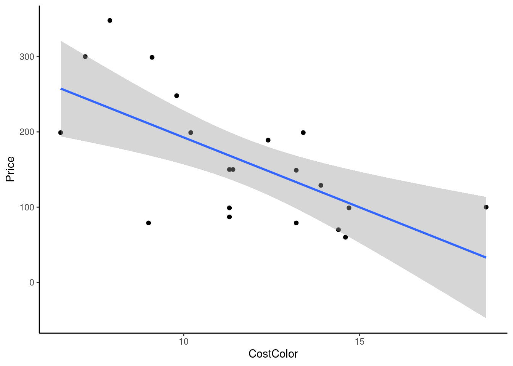
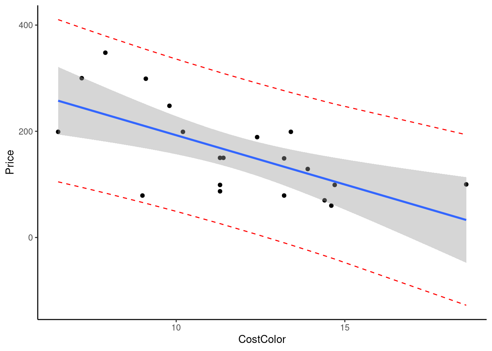
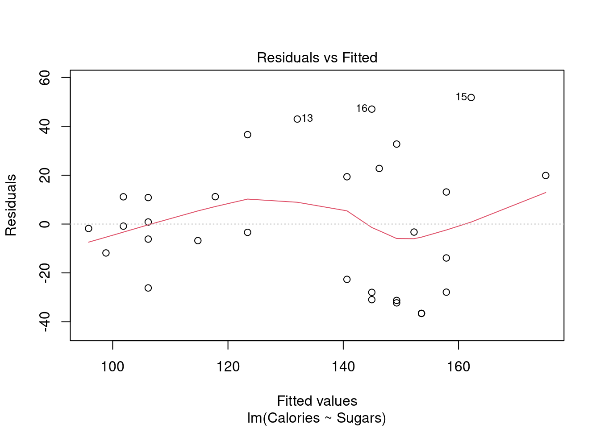
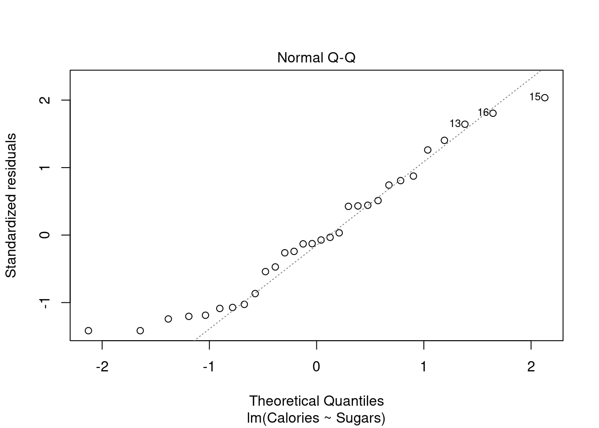

24 Class Activity 24
24.1 Example 1: Data from online reviews of inkjet printers is available under the dataset InkjetPrinters. The data is extracted from reviews of inkjet printers at PCMag.com in August 2011. We are interested in the quantitative variable Price, the typical retail price of printers in dollars and CostColor, the cost per page in cents for printing in color.
# load the data
inkjet <- read.csv("https://www.lock5stat.com/datasets2e/InkjetPrinters.csv")
Call:
lm(formula = Price ~ CostColor, data = inkjet)
Residuals:
Min 1Q Median 3Q Max
-132.155 -48.965 1.213 52.629 116.429
Coefficients:
Estimate Std. Error t value Pr(>|t|)
(Intercept) 378.195 61.451 6.154 8.23e-06 ***
CostColor -18.560 5.111 -3.631 0.00191 **
---
Signif. codes:
0 '***' 0.001 '**' 0.01 '*' 0.05 '.' 0.1 ' ' 1
Residual standard error: 66.09 on 18 degrees of freedom
Multiple R-squared: 0.4228, Adjusted R-squared: 0.3908
F-statistic: 13.19 on 1 and 18 DF, p-value: 0.00191
anova(mod1)Analysis of Variance Table
Response: Price
Df Sum Sq Mean Sq F value Pr(>F)
CostColor 1 57604 57604 13.186 0.00191 **
Residuals 18 78633 4369
---
Signif. codes:
0 '***' 0.001 '**' 0.01 '*' 0.05 '.' 0.1 ' ' 1
coeff <- coefficients(mod1)
eq = paste0("y = ", round(coeff[1],1), round(coeff[2],1), "*x")
ggplot(inkjet, aes(x=CostColor, y=Price))+ theme_classic()+
geom_point()+
geom_abline(intercept = coeff[1], slope = coeff[2], color = "red",
linetype = "dashed", size = 1.5)+
ggtitle(eq)
24.1.1 (1a) What is the regression line? Please do not forget to define the variables in the regression equation.
Answer:
\[\widehat{Price} = 378.20 - 18.56\cdot CostColor\]
24.1.3 (1c) Find the \(95\%\) confidence interval for the mean price of inkjet printers that cost 9 cents per page to print in color. You can use the predict function in R to calculate the confidence interval.
# new data frame with the new x*
newx = data.frame(CostColor=9.0)
predict(mod1,newx, interval="confidence", level = 0.95) fit lwr upr
1 211.1552 168.8926 253.4178Answer:
The following is a plot of \(95\%\) confidence interval for the mean price.
# 95% confidence interval
ggplot(inkjet, aes(x=CostColor, y=Price))+ theme_classic()+
geom_point()+
geom_smooth(method=lm, se=TRUE)
24.1.4 (1d) Find the \(95\%\) prediction interval for the price of a particular inkjet printer that cost 9 cents per page to print in color. Again, you can use the predict function in R to calculate the prediction interval.
newx=data.frame(CostColor=9)
predict(mod1,newx, interval="prediction", level = 0.95) fit lwr upr
1 211.1552 66.00634 356.3041Answer:
The following is a plot of \(95\%\) prediction interval for price of an individual inkjet printer.
pred_interval <- predict(mod1, interval = "prediction")
final_df <- cbind(inkjet, pred_interval)
ggplot(final_df, aes(x=CostColor, y=Price))+ theme_classic()+
geom_point() +
geom_line(aes(y=lwr), color = "red", linetype = "dashed")+
geom_line(aes(y=upr), color = "red", linetype = "dashed")+
geom_smooth(method=lm, se=TRUE)
24.1.5 (1e) Verify the confidence interval in part (1c) by hand. The formula for calculating the confidence interval is
\[\hat{y} \pm t^{*} s_{\epsilon} \sqrt{\frac{1}{n}+\frac{\left(x^{*}-\bar{x}\right)^{2}}{(n-1) s_{x}^{2}}} \]
summary(inkjet$CostColor) Min. 1st Qu. Median Mean 3rd Qu. Max.
6.500 9.625 11.350 11.670 13.525 18.600
sd(inkjet$CostColor)[1] 2.966675Answer:
[1] 168.8887 253.4217\[211.1552 \pm 2.101* \sqrt{4369}*\sqrt{\frac{1}{20} + \frac{(9.0 - 11.67)^2}{(20-1)2.966^2}}\]
\[(168.89, 253.42)\]
24.1.6 (1f) Verify the prediction interval in part (1d) by hand. The formula for calculating the prediction interval is
\[\hat{y} \pm t^{*} s_{\epsilon} \sqrt{1+\frac{1}{n}+\frac{\left(x^{*}-\bar{x}\right)^{2}}{(n-1) s_{x}^{2}}}\]
Answer:
[1] 65.99288 356.31752\[211.1552 \pm 2.101* \sqrt{4369}*\sqrt{1+\frac{1}{20} + \frac{(9.0 - 11.67)^2}{(20-1)2.966^2}}\] \[(65.99, 356.32)\]
24.1.7 (1g) Conduct a hypothesis test to see if we can predict the price of inkjet printers (in dollars) based on the cost per page (in cents) for printing in color (i.e., test if the linear model is effective). You can check the conditions for the test by looking at the plots provided.
Answer:
inkjet$Residuals <- mod1$residuals
ggplot(inkjet, aes(x=CostColor, y=Residuals))+ theme_classic()+
geom_point()+
geom_hline(yintercept = 0, color = "red")
ggplot(inkjet, aes(sample = Residuals)) + geom_qq() + geom_qq_line()+theme_classic()